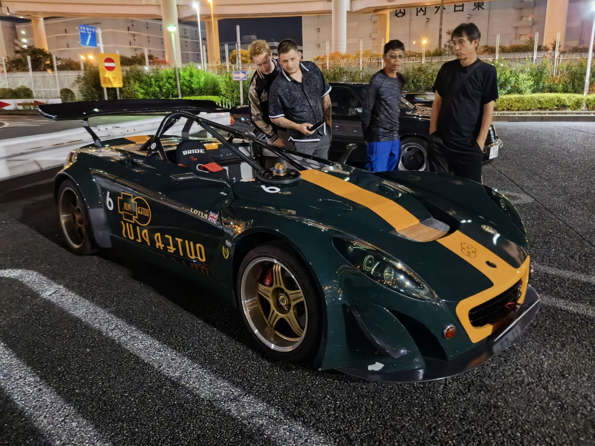
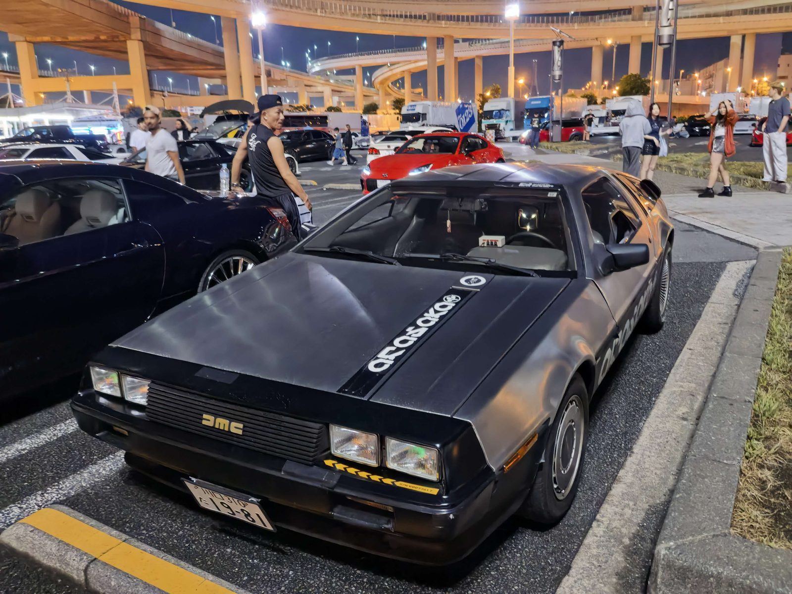
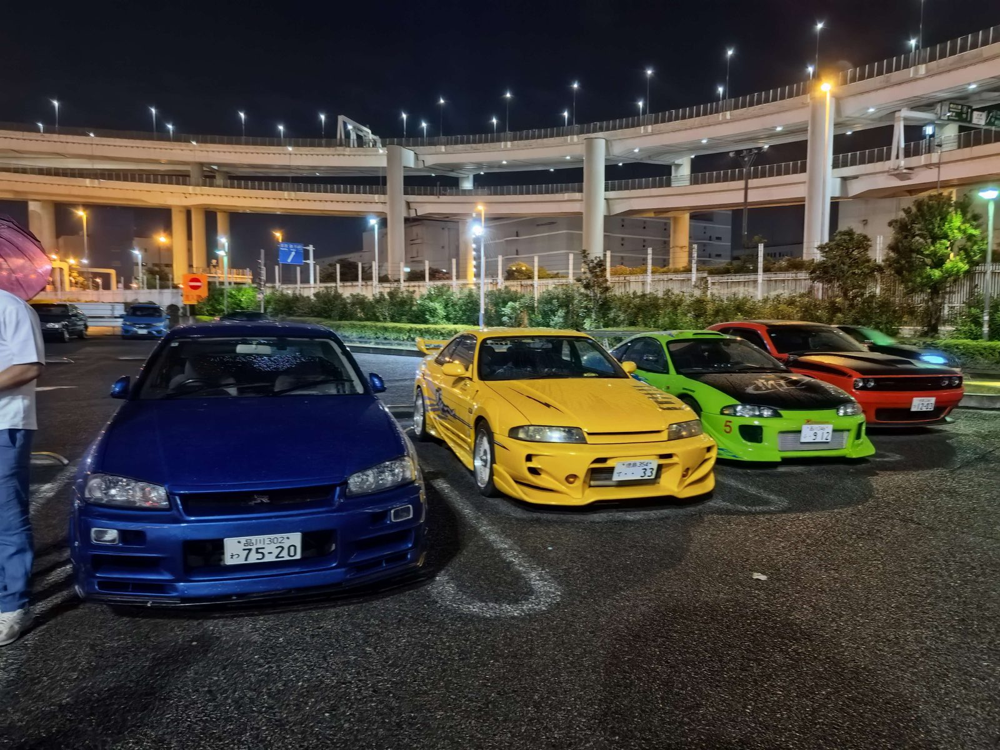
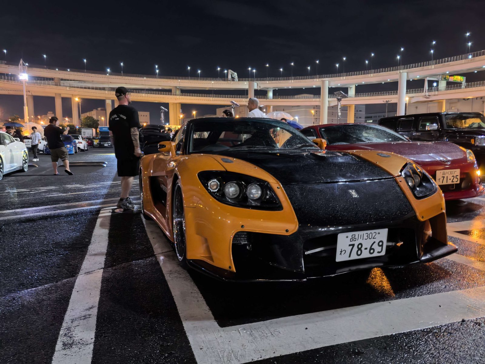
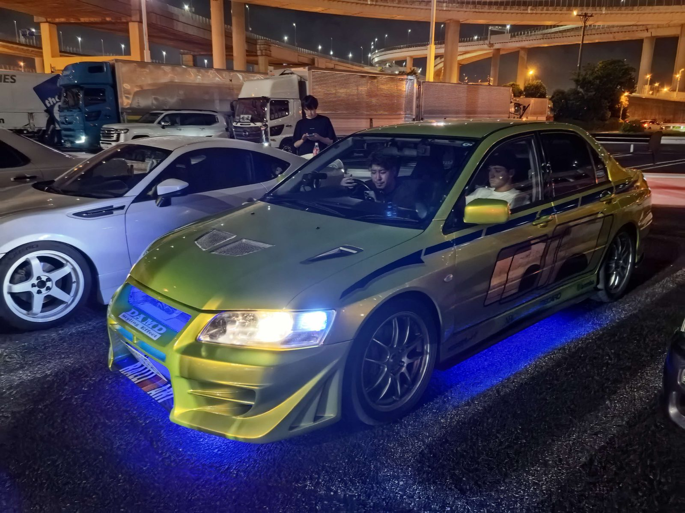
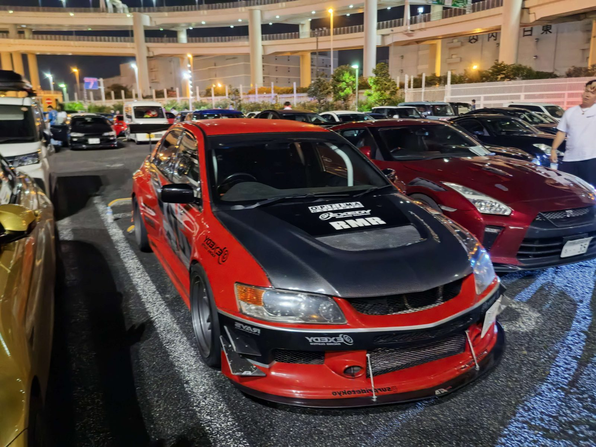
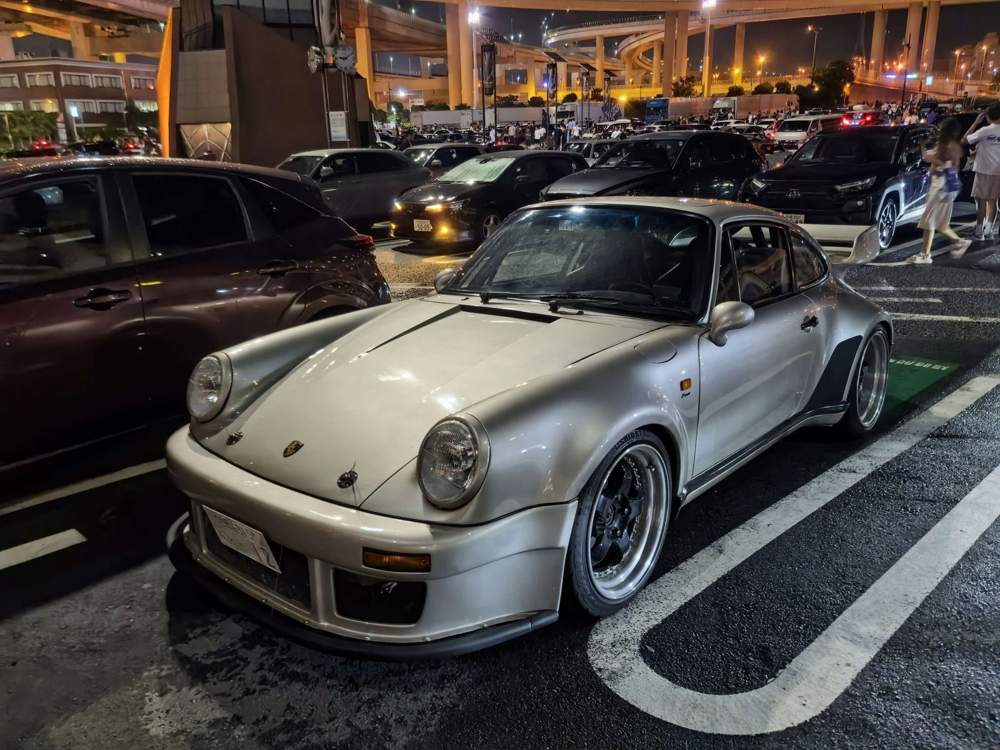
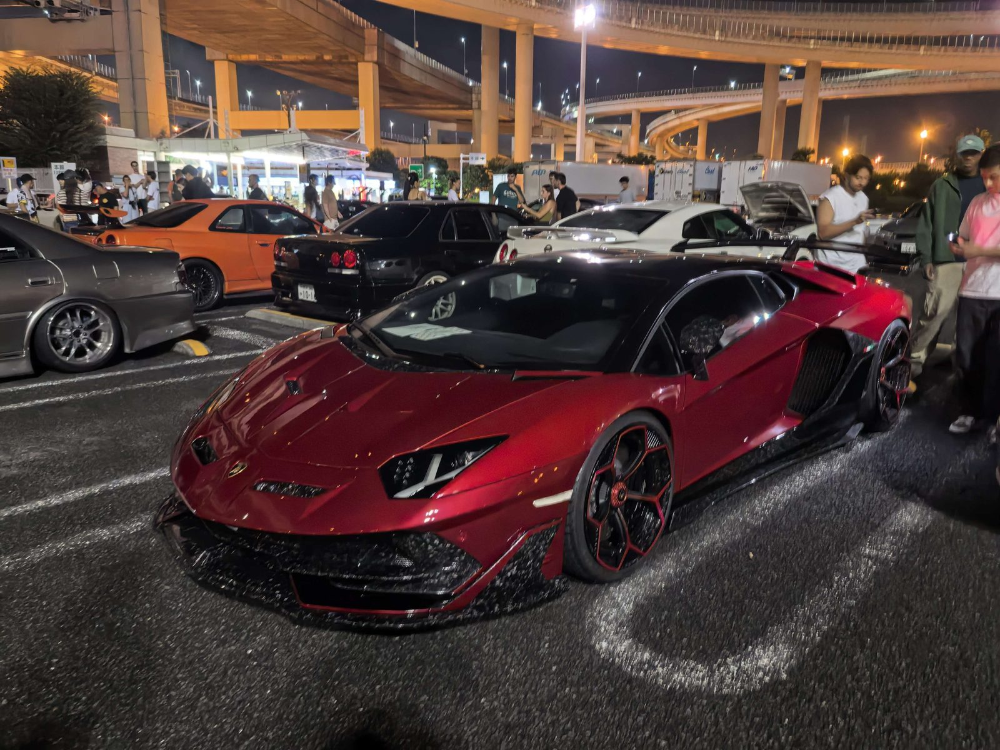
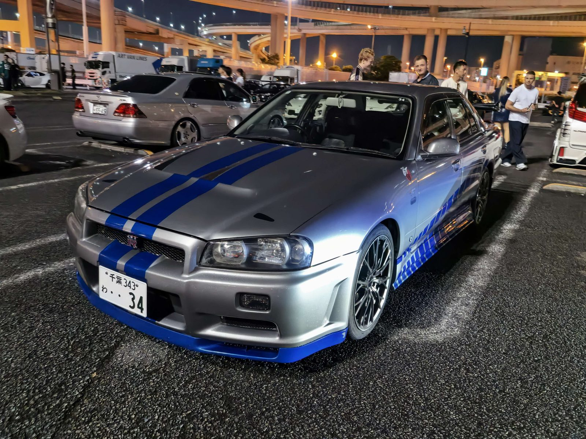

Things I Love
Off the clock, this is what I'm usually doing
🚗 Cars
I've always had a thing for cars. On a trip to Japan, I ended up photographing them more than the sights — the kei trucks, the taxis, the old sports cars parked in quiet streets. A few favorites below.









🎨 Art & Comics
I've painted and drawn for years — comics are my favorite. Comic Level 8 certified, with a few gold awards along the way.
Painting
My "Old Shanghai" piece of the Bund took me a month and won an "Outstanding Work" award.
Comics
Comic Level 8 — the highest grade. I love building characters and giving them a voice.
🎙️ Voice Acting
I'm the Vice President of my school's Voice Acting Club. Giving a character a voice — especially a villain's — is my favorite kind of performance.
🕹️ Games
I play roguelikes and tactical games — Shogun Showdown is the one that made me want to build an AI that plays it for me.